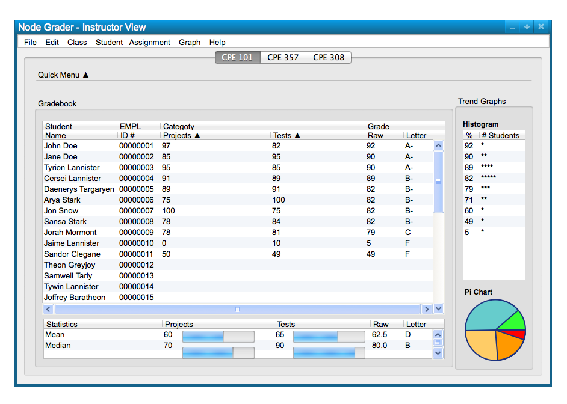
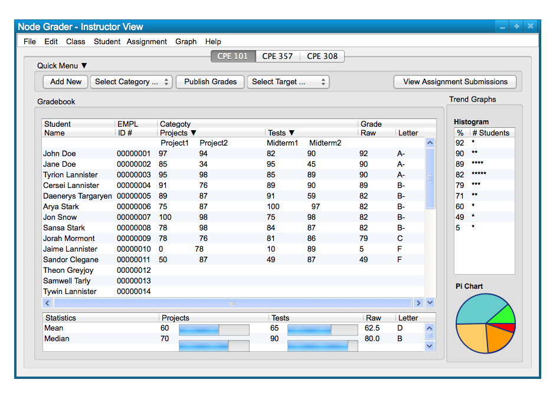

Some pieces of the gradebook can be expanded, for more details or command options, or collapsed to limit what is displayed
to the user. Particularly, the Quick Menu bar can be expanded to provide a user with quick options to add a new item to
the spreadsheet, publish grades to students and university servers, and view assignment submissions by students. This menu
can also be collapsed for users that don't want another menu above the spreadsheet or that prefer to select commands from
their path in the top-menu bar at the top of the window. Figure 1 shows a sample class with the Quick Menu shown in its
expanded form.
Figure 1: Quick Menu Expanded.
To expand and collapse the Quick Menu, the user simply clicks on the black arrow located next to the words "Quick Menu" at
the top of Quick Menu bar. The user can toggle the expanded or collapsed view by clicking the arrow repeatedly. Figure 2 below shows an collapsed view of the Quick Menu that results from the user clicking the arrow while the menu is expanded.
If the user clicks the arrow again, it will return to the previously expanded form.

Figure 2: Quick Menu Collapsed.
Another feature that can be expanded and collapsed is the Category section of the class spreadsheet. Each category list can toggle its expansion with the arrows located next to the name of each category. The expanded view of each category will show the individual assignments associated with each category and update the spreadsheet to display the scores each student received on the assignments.
Until now, the Projects and Tests categories have been collapsed in our
above figures; Figure 3 shows an expanded view of both categories. Again, this is done by clicking on the arrow located next to the Category names.

Figure 3: Categories Expanded.
Expanding and collapsing fields provides the user with more or less options to operate commands and view items in the spreadsheet while letting them tweak it to their preference.